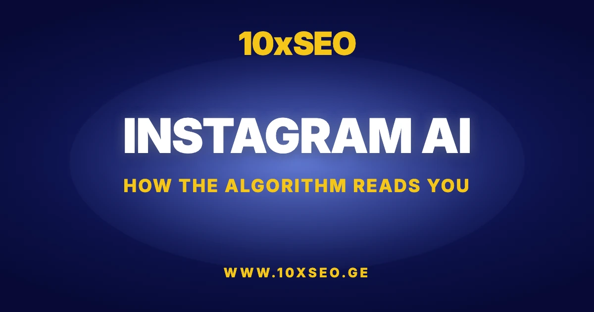

Instagram knows your mood right now. It knew before you opened this article. The moment you launch the app, a handful of machine-learning models assemble a psychological snapshot of your emotional state — and by the time the first post loads, that snapshot is already shaping what you see.
You haven't liked a single photo. You haven't typed a word into the search bar. Yet the feed is already reacting. The system has found its answer before you've consciously formed the question — and it has reshaped your digital environment accordingly. The mechanism behind this is more precise than most users realize.
The Algorithm That Reads the Subconscious
When you open Instagram, the algorithm isn't waiting for you to like a post or leave a comment. It starts working far earlier, tracking the signals you can't consciously control: the exact speed at which your thumb moves across the screen, and the micro-pauses you make between posts.
Those pauses are not random. Research in psychomotor behavior has consistently shown that voluntary motor activity is directly coupled to the state of the nervous system. When you're energized, your scroll is brisk and decisive. When fatigue, boredom, or emotional flatness sets in, the same motion becomes heavier and slower — a change measurable in milliseconds.
The algorithm measures exactly how long your gaze lingers on a specific image. If you dwell on a melancholic landscape, or a quote you would ordinarily scroll past, the system records it the instant it happens.
For the algorithm, this is a signal that your emotional filters are weakened — that you are primed for content that resonates with your current, often unconscious, state of mind.
The Psychology of Color
Psychologists have studied the relationship between human mood and color perception for decades. Instagram's AI exploits that relationship with precision.
When we're emotionally depleted, our gaze instinctively avoids bright, visually loud frames. Instead, the eye gravitates toward aesthetics dominated by blues, grays, and deep tones — palettes that don't demand the cognitive effort that saturated imagery requires.
The moment the system detects this perceptual shift, it recalibrates your digital environment in real time. Colorful, high-energy visuals quietly fade from the feed. Their place is taken by content that doesn't conflict with your internal state — imagery that feels congruent rather than jarring.
This is not a coincidence of the recommendation engine. It is the recommendation engine operating exactly as designed.
Sleep Patterns and Social Isolation
Instagram knows precisely when you go to sleep and when you wake up. If your established pattern is to put the phone down at 11pm but tonight you're still scrolling at 3am, the algorithm registers the deviation immediately. For the system, this is not merely an anomaly in usage data — it is a behavioral marker encoding anxiety, loneliness, or emotional instability.
Beyond sleep, the platform monitors the texture of your social interactions. If direct messages with friends have dropped off while time spent passively watching public videos has climbed, that asymmetry reads as a clear indicator of social withdrawal.
When you're avoiding real human contact and filling the gap by passively consuming posts, the algorithm understands that you are at your most receptive. It responds by surfacing content calibrated to fill that absence — companionship, validation, distraction — whatever the behavioral profile suggests will extend the session.
What Is the Actual Goal?
Beneath the surface of mood-tracking lies a precise commercial logic: the platform needs you to stay as long as possible, because every additional minute generates more interactions, more data, and ultimately more revenue.
In parallel, the system is optimizing for ad effectiveness. When it detects fatigue, boredom, or loneliness, it serves posts — and then ads — that map perfectly onto that state. The categories vary: comfort food, mobile gaming, self-improvement courses. What they share is emotional relevance — each one is framed as a resolution to whatever the behavioral data indicates you're feeling.
Ultimately, this architecture reveals something important about the digital age: our emotional signals have become a navigational tool for platforms, enabling them to construct environments maximally tuned to our moment-to-moment state. Every pause, every micro-interaction, helps the system more precisely define what content or advertisement will feel useful — even necessary. It is a form of technological intimacy in which the algorithm translates emotions into a commercial language, and in return, offers a world that mirrors exactly what you're feeling right now.
Is your brand visible where your audience already is?
Get a free 72-hour SEO audit — we'll show you exactly where your organic visibility is leaking, and how to fix it fast.
Frequently Asked Questions
How does Instagram detect a user's mood or emotional state?
Instagram's algorithm infers emotional state from behavioral micro-signals — not from what users actively post. It measures scroll speed, dwell time on individual images, color palette preferences, interaction frequency, and late-night usage patterns. These passive signals are processed in milliseconds and used to personalize the content feed in real time, surfacing posts that match the user's current psychological profile.
Does Instagram use AI for sentiment analysis and content personalization?
Yes. Instagram employs machine-learning models that continuously update a user's emotional profile based on behavioral data. The system uses AI sentiment analysis — drawing on research linking motor behavior to nervous system states — to infer mood and adjust the content feed accordingly. This is a core part of Meta's engagement optimization infrastructure.
What signals does Instagram track to infer emotional state?
Instagram tracks four primary signal categories: scroll velocity and micro-pause patterns (correlated with energy levels and emotional fatigue); visual preference shifts toward muted or dark color palettes (indicating low mood); sleep pattern anomalies such as late-night activity outside the user's routine (flagged as indicators of anxiety or loneliness); and reduced social interaction — fewer direct messages alongside increased passive viewing — as a marker of social withdrawal.
Why does Instagram show different content when you're feeling down?
When the algorithm detects signals associated with low mood — slower scrolling, longer dwell on melancholic imagery, late-night sessions, reduced social interaction — it recalibrates the feed to match the user's emotional state. This is not coincidental: the system is designed to maximize session time and ad relevance. Content aligned with the user's emotional state generates more engagement, which increases ad effectiveness and platform revenue.
Can Instagram's mood detection affect what ads you see?
Directly, yes. The emotional state inferred from behavioral signals feeds into Meta's ad targeting system. When the algorithm detects fatigue, loneliness, or low mood, it prioritizes ad categories historically associated with those states — comfort food, gaming, self-improvement courses, and impulse purchases. This is why the ads you encounter during low-energy, late-night browsing often feel unusually, uncomfortably relevant.
Ready to be the brand that gets found first?
Talk to 10xSEO about your organic growth strategy. Free 15-minute consultation.
Book Free Consultation